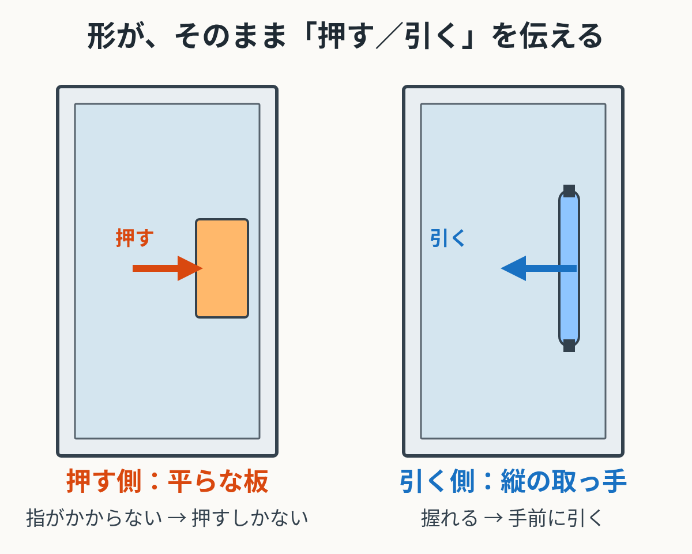
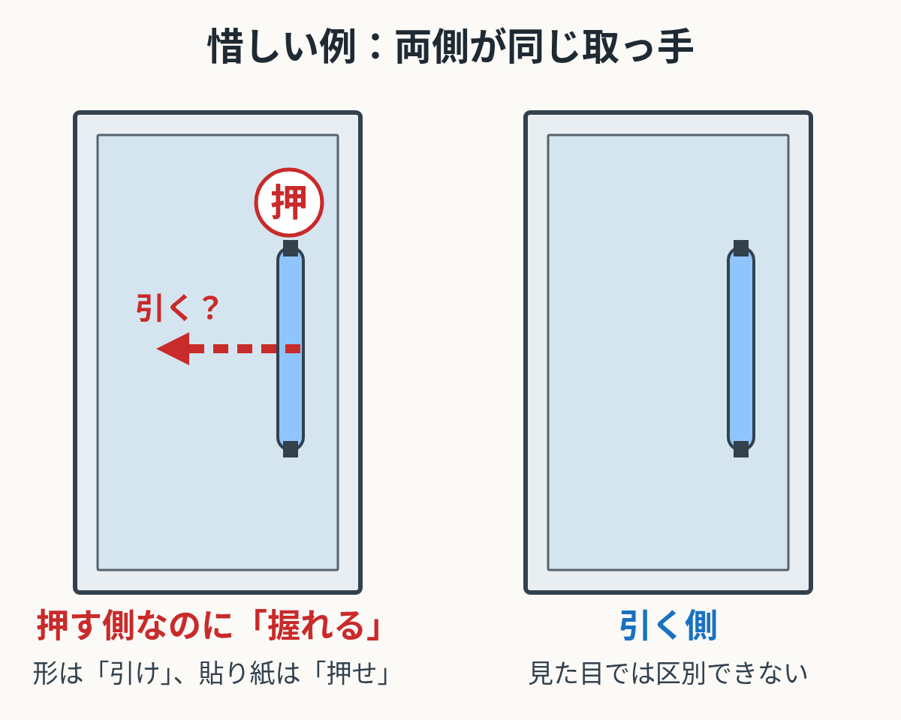

第1回 扉と開口
押し板と縦の取っ手（扉の「押す」「引く」）


何がどう行為を誘っているか
扉に付いた平らな押し板には、指をかける場所がありません。だから手のひらを当てて「押す」ことしか思い浮かびません。反対側の縦に長い棒状の取っ手は、握れる形なので「握って手前に引く」動きを誘います。
扉が押して開けられること自体は、扉と人の身体の関係で決まる性質で、ギブソンのいうアフォーダンスです。一方、板や取っ手の形は「どこを、どう動かすか」を知らせる手がかりで、ノーマンはこれをシグニファイアと呼んで区別しました。
惜しい例・悪い例との対比
惜しいのは、押す側にも引く側にも同じ棒状の取っ手が付いた扉です。押す側の取っ手も「握って引け」と誘ってしまうので、押すべきところで引いてしまいます。
「押」「引」の貼り紙が必要になっているなら、形が誤った合図を出している印です。文字の表示は、形の合図を後から打ち消そうとしている状態だといえます。
使いどころのひとこと
スライドやWebのボタンも同じで、押せる要素と押せない要素の見た目が同じだと、ラベルで補っても迷いが残ります。資料やサイトを見直すときは「説明書きを足さないと使えない箇所はどこか」を探すと、直すべき形が見つかります。
出典
- Norman, D. A. (2013). The Design of Everyday Things (Revised and expanded edition). Basic Books.
- Norman, D. A. (1999). Affordance, conventions, and design. Interactions, 6(3), 38–43.
- Gibson, J. J. (1979). The Ecological Approach to Visual Perception. Houghton Mifflin.